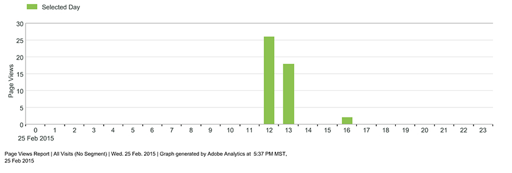
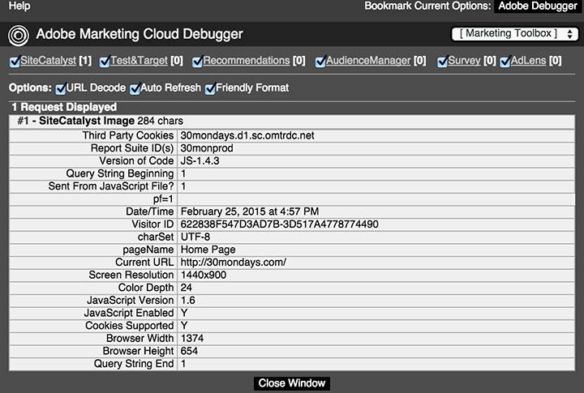

How to implement a website for Adobe Analytics
Note: This configuration is for the legacy javascript implementation. If you have a company enabled for IMS consider using DTM (dynamic tag management). This implementation is sufficient for basic tracking.
- Identify the Marketing Cloud company and website you will use. You will need to be an admin of the Marketing Cloud company, and have write access to the webserver hosting your site.
- Navigate to https://my.omniture.com > Admin > Code Manager, and download the 'JavaScript (new)' package. You will only need AppMeasurement.js and VisitorAPI.js
- On the same page, locate your rsid, namespace, and analytics server url, using the legacy code manager tool at the bottom of the page.
- To instrument your website, follow the JavaScript Implementation instructions in the Adobe Analytics Implementation guide (page 13).
- Upload the new files and changes to your webserver.
- Navigate to your website and verify that data is being sent by using the Digitalpulse Debugger
- Perform a number of GET requests on a page that you have instrumented. Verify that results are captured in the report View All Reports > Site Metrics > Page Views. If you have access enable to the real-time data feature set Include Current Data: Yes. Even with real-time enabled you may have to wait 15min for results.
The implementation code for this website can be seen at 30mondays or by viewing the source

